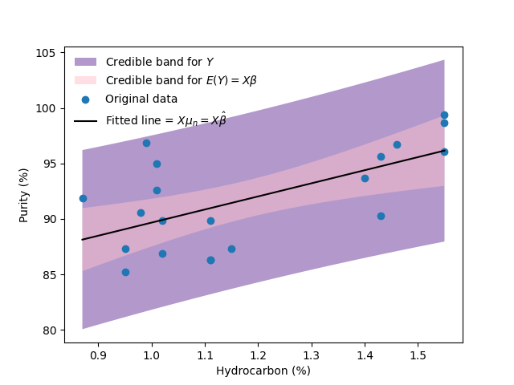

5. Bayesian regression#
Mathematical modeling refers to the construction of mathematical expressions that describe the behavior of a variable of interest \(Y\). Frequently, we want to add to the model other variables (features) \(X\), which have information about the variable of interest \(Y\). This problem is known as regression. Formally, we look for a function \(f:\mathcal{X}\to\mathcal{Y}\) such that \(f(X)\) is a good approximation of \(Y\).
5.1. Bayesian linear regression, the Normal - Inverse-\(\chi^2\) model#
Consider the usual regression model
with \(\varepsilon|X\sim \textsf{Normal}(0,\sigma^2)\) and \(\varepsilon\perp\!\!\!\perp\beta|X\).
And assume that we have a sample \(\mathcal{D}_n=\left((X_1,Y_1),\ldots,(X_n,Y_n)\right)\) with \((X_i,Y_i)\overset{iid}{\sim}(X,Y)\). Thus, the model can be written as
The parameters of this model are \(\beta\) and \(\sigma\).
See also
The accounts needed to deduce all the different distributions of the model presented in this chapter are too tedious, so I will limit myself to present here the results. Those readers interested can find in these notes all the details.
5.1.1. Prior distributions#
Consider the following priors for this model
with \(\mu_\beta\in \mathbb{R}^p\) and \(V_0\) a symmetric, positive definite matrix.
In this case we say that the joint distribution of \(\beta,\sigma^2\) is a Normal - Inverse-\(\chi^2\) distribution with parameters \(\mu_0,\, V_0,\, \nu_0\) and \(\sigma_0^2\), which is denoted as
With some extra effort, it is possible to show that
5.1.2. Posterior joint distribution#
Due to the conjugacy property, the joint posterior distribution is given by
where
5.1.3. Prior predictive distribution#
It can be shown that
5.1.4. Posterior predictive distribution#
Due to the conjugacy property, it is immediate that
5.2. Example#
Note
The data for this example were taken from the problem 2.7 of [MPV21], fifth edition
You can check the whole code for this example in the file 04_RegressionPurityCondensor.ipynb within the repository of the course. Here I just present the results.
Since a priori I didn’t know anything about the process from which the data was taken, I used noninformative priors for the \(\beta\) and \(\sigma^2\). The next figure shows the posterior joint distribution of \(\beta_0\) and \(\beta_1\), which we know that follows a multivariate \(t\) distribution, I have added individual intervals of posteriori probability of 0.95 for each one. Note that there are a lot of points in the intervals, that are not likely at all when we consider the joint distribution.
Similarly, in the next image I present the posterior distribution of \(\sigma^2\) with a posterior interval of probability 0.95 obtained with the quantiles method, i.e. the interval is given by the quantiles of probability 0.025 and 0.975.
Finally, in the next image I present the scatterplot with the fitted regression line, I present posterior intervals for both, the regression function and observations comming from the process analyzed. It is common in the Bayesian framework to call them “Credible intervals”, other authors have proposed to call them “Compatibility intervals”. Let as it be, I denoted these intervals as “Confidence interval” and “Prediction interval”, respectively.
5.3. Exercises#
Verify that the expressions of the normal inverse \(\chi^2\) are obtained from the expressions of this section.